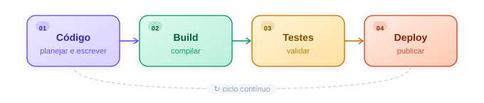

Introdução
Série pipeline. Este é o segundo artigo da série. No primeiro texto, eu falei da origem do conceito dentro do processador. Aqui, a ideia é trazer a mesma lógica para o desenvolvimento de software.
Como mencionei anteriormente, pipeline é um fluxo que quebra um problema grande em várias partes menores, para que elas avancem em pequenos processos e mantenham o trabalho o mais contínuo possível.
No desenvolvimento de software, esse fluxo costuma aparecer em alguns passos principais:
Claro que nem tudo é tão simples quanto parece à primeira vista. Só na prática mesmo para entendermos o quão custosa e desafiadora pode ser cada fase. A seguir vou falar de pipeline sem falar de CI/CD, porque o conceito já existia antes.

Etapa 1: Código
Essa é talvez a parte mais importante, porque quanto melhor fizermos ela, menos voltas daremos depois. Essa fase é marcada pela pesquisa e pelo planejamento, porque antes mesmo de começar a escrever o código, precisamos entender o que vamos fazer e como vamos fazer, pelo menos os primeiros passos.
Algumas perguntas que precisamos responder:
- Quais funcionalidades a aplicação vai ter?
- Como estruturar o projeto?
- Quais tecnologias e frameworks usar?
- Como modelar o banco de dados?
- Qual a estratégia de autenticação?
No meu projeto Museu de Bugs eu precisava de:
- Uma API que recebesse, listasse, editasse e deletasse bugs
- Um banco de dados para persistir esses bugs
- Autenticação para proteger rotas de escrita
- Um frontend que consumisse essa API
As decisões que moldam o código
A minha aplicação era simples no escopo, mas ainda assim pedia algumas decisões técnicas. Eu precisava registrar bugs e erros no banco por meio de uma aplicação web, então fui tentando manter a estrutura enxuta sem abrir mão de uma base minimamente organizada.
Antes de escrever a primeira linha, precisei responder algumas perguntas.
1. Qual tipo de aplicação?
API REST. Isso define que vou usar HTTP, verbos como GET, POST, PUT e DELETE, e JSON como formato de troca de dados.
2. Qual banco de dados?
PostgreSQL. Relacional, porque os bugs têm estrutura fixa: título, linguagem, descrição e status. NoSQL não faria muito sentido aqui.
3. Como autenticar?
A escolha foi usar cookie em vez de JWT. Para entender o motivo, é preciso entender o que o domínio representa nesse contexto.
Quando o navegador faz uma requisição, ele segue uma política de segurança chamada Same-Origin Policy, que controla o que pode ser compartilhado automaticamente entre requisições. Uma origem é a combinação de protocolo, domínio e porta, como https://museudebug.com:443.
Como o frontend e o backend vão estar no mesmo domínio em produção, o cookie é enviado automaticamente em toda requisição sem nenhuma configuração extra. Você seta no login e o navegador cuida do resto.
O JWT faria mais sentido quando os domínios são diferentes, quando terceiros consomem sua API, ou quando existem múltiplos clientes como mobile e desktop. Nesses casos o cookie deixa de ser a escolha mais natural, porque depende do navegador e da origem da requisição.
4. Como organizar o código?
Decidi manter uma organização simples, mas suficiente para explorar um pouco da arquitetura de camadas:
- Controllers recebem HTTP e devolvem HTTP
- Services guardam a lógica de negócio
- Entities representam as tabelas do banco
- DTOs carregam dados entre camadas

5. Como validar dados?
Data Annotations. Atributos como [Required], [MaxLength] e [MinLength] direto nos DTOs. Poderia usar FluentValidation, mas Data Annotations era o caminho mais simples para esse projeto.
Fechando a etapa de código
Cada uma dessas decisões eliminou uma série de outras opções, e isso é bom. Quanto mais você simplifica no início, menos voltas dá depois.
Mesmo assim, foi difícil me sintonizar na comunicação entre camadas. E isso é algo que a sintaxe básica da linguagem não resolve, porque construir uma aplicação real é muito mais do que saber escrever if e else. Frameworks e bibliotecas trazem seus próprios padrões, seus próprios métodos, quase uma linguagem dentro da linguagem.
Com o código escrito e as decisões tomadas, o próximo passo é colocar essa aplicação para rodar. E aqui que entra a etapa de build.
Etapa 2: Build
Em C#, o comando para buildar é dotnet build. Nesse processo, o compilador lê todo o código e o transforma em um arquivo .dll dentro da pasta bin/, que é o que o runtime do .NET vai executar de fato.
O que aprendi na prática é que o dotnet run já faz esse processo internamente antes de executar a aplicação. Ele também é inteligente o suficiente para pular a compilação quando nenhum arquivo foi alterado desde o último build, por isso às vezes parecia instantâneo e outras vezes demorava mais.
Essa etapa foi marcada por torcer para aparecer a mensagem de sucesso na cor certa e não um monte de texto vermelho. E o vermelho apareceu bastante.
Os erros que enfrentei foram de dois tipos:
- Erro de sintaxe, com código digitado errado
- Incompatibilidade de versão entre pacotes do Entity Framework Core
A solução, em um dos casos, foi remover o pacote conflitante e instalar a versão correta:
dotnet remove package Microsoft.EntityFrameworkCore
dotnet add package Microsoft.EntityFrameworkCore --version x.x.x
dotnet restore
O dotnet restore sincroniza todas as dependências listadas no .csproj, que funciona como um catálogo do que a aplicação precisa para compilar e rodar.
Fechando a etapa de build
Uma coisa que aprendi depois de já ter passado por isso: o modo Debug é o ideal para desenvolvimento. Ele mantém informações extras no código compilado que permitem ver o erro acontecendo em tempo real, inspecionar variáveis e entender exatamente onde a coisa quebrou.
O modo Release, que eu usava por padrão sem saber, é otimizado para produção: mais leve, mais rápido, mas sem o mesmo apoio de diagnóstico.
Etapa 3: Testes
Essa etapa começou assim que terminei os dois primeiros endpoints, o GET e o POST, quando eu já conseguia criar um bug e receber um response de volta.
No começo eu ainda não usava Swagger. O template padrão do .NET já vinha com uma interface básica, mas por algum motivo passei horas tentando substituir e configurar o Swagger corretamente e não conseguia. Desisti por um tempo e comecei a testar direto pelo terminal com ajuda de IA, que me gerava os arquivos JSON para usar nas requisições.
Foi aí que aprendi na prática que JSON é o formato padrão de comunicação de uma API REST. É como ela envia e recebe dados.
Para subir a API durante o desenvolvimento, o comando mais útil não era o dotnet run puro, mas sim o dotnet watch run. Ele sobe a aplicação e fica monitorando alterações nos arquivos. Quando você salva algo, ele reinicia automaticamente sem precisar parar e subir de novo.
A estratégia de teste foi simples:
- Primeiro mandei um request no formato certo para ver se criava o bug corretamente
- Depois mandei um no formato errado de propósito para validar se o sistema rejeitava
- Fui repetindo esse ciclo a cada novo endpoint
Isso é testar o contrato da API: verificar se ela aceita o que deve aceitar e rejeita o que deve rejeitar.
Com ajuda de IA consegui instalar o Swagger corretamente através do pacote Swashbuckle. A partir daí, ficou mais fácil enxergar as rotas disponíveis, os formatos esperados e as mensagens de erro sem depender só da resposta crua do terminal.
Com todos os endpoints testados e funcionando, o próximo passo natural foi construir uma interface para tornar a aplicação utilizável de verdade. A escolha foi Angular com TypeScript. Nessa altura eu já estava no 13º dia de projeto e havia conteúdo suficiente para estudar por meses, então o frontend foi construído com apoio de IA enquanto eu acompanhava o que estava sendo gerado para entender o mínimo do que estava acontecendo.
Etapa 4: Deploy
Com a aplicação funcionando localmente, chegou a hora de colocar tudo no ar. A primeira decisão foi onde hospedar. Como eu queria algo gratuito, a stack escolhida foi:
O repositório continha frontend e backend juntos, então nas plataformas de deploy bastava apontar para a pasta correta. Isso também significa que cada push no GitHub podia disparar deploy automático, o que na prática já desenha um fluxo de entrega contínua.
Banco de dados no Supabase
Configurar o banco foi a parte mais tranquila. Você cria pelo painel, preenche as configurações e conecta. Um detalhe importante: usar os mesmos nomes definidos no código ajuda a evitar divergências entre o nome das tabelas no banco e no projeto.
Na hora de configurar a connection string no Render, tentei usar Direct Connection e Transactional Pooler, e nenhum funcionou. O que resolveu foi o Session Pooler, que é o modo de conexão mais adequado para a minha aplicação com .NET e Entity Framework.
Docker e o Render
Para subir a API no Render era necessário usar Docker. O conceito importante aqui é que Docker não simula hardware; ele empacota o ambiente do sistema operacional. Isso significa que você consegue criar um container com exatamente as dependências que sua aplicação precisa para rodar, independente do sistema onde ela vai ser executada.
O Dockerfile do projeto usa um multi-stage build: uma imagem com o SDK completo compila o código e gera o .dll, e depois só o resultado vai para uma imagem menor, com o runtime. A imagem final fica mais leve e sem ferramentas de build que não são necessárias em produção.
36 falhas de deploy
O histórico de commits contou essa história:
No fim, o que resolveu foi a combinação de três coisas:
- Configurar a porta corretamente com
ASPNETCORE_HTTP_PORTS=10000 - Instalar a dependência
libgssapi-krb5-2na imagem de runtime - Ajustar o contexto do Dockerfile para a pasta correta da API
Os primeiros bugs em produção
Depois que a API subiu, o frontend na Vercel ainda não conseguia se conectar. A partir daí começou uma nova rodada de problemas, e esses foram os primeiros bugs registrados no próprio Museu de Bugs.
O primeiro foi que o frontend em produção continuava chamando localhost:5041 em vez da API do Render. O build antigo na pasta dist ainda tinha arquivos com a URL local, sobrescrevendo as configurações novas. A solução foi apagar a dist, gerar um novo build e confirmar com grep que a URL correta estava nos arquivos gerados.
O segundo foi um 400 Bad Request dizendo que o campo descrição precisava ser preenchido mesmo com o campo preenchido na tela. O problema estava em um [RegularExpression] desnecessário no DTO, que quebrava com textos maiores e com quebra de linha. Remover o regex e deixar só o [Required] resolveu.
Além disso, as variáveis de ambiente de autenticação não tinham sido configuradas no Render, então o backend não tinha com o que comparar as credenciais. E o CORS precisou de ajuste, porque sem a origem do frontend liberada o backend recusava as requisições mesmo com o resto aparentemente certo.
Uma limitação do plano gratuito do Render é que a API dorme depois de um período sem uso, então a primeira requisição demora alguns segundos enquanto o container acorda. Para o propósito do projeto, isso funcionou bem.
Conclusão
Terminar minha primeira aplicação gerou um pico de dopamina que eu não esperava. É extremamente frustrante, extenuante e, às vezes, doloroso, mas é igualmente gratificante.
Depois de 13 dias de hiperfoco nos meus tempos livres, com algumas partes feitas mais às pressas como o frontend, consegui terminar. E quanto mais eu entendo, mais sei o quanto ainda preciso estudar. São muitos conceitos vistos de uma vez, e boa parte deles só vai realmente assentar com o tempo.
Fazer projetos reais é exatamente isso: entrar em contato direto com esse conteúdo, tomar essa bomba na cara e decidir se você gosta ou não.
Porque não é fácil. Não é simples como escrever um punhado de if e else em um curso e achar que está fazendo uma aplicação real só porque aparece algo no terminal. Uma aplicação real vai muito mais fundo que isso. É arquitetura, organização, resiliência e tomada de decisão.
Talvez eu não trabalhe em projetos que mudam o mundo, mas a capacidade de imaginar um sistema, pensar como usuário e transformar isso em algo utilizável é o que me move. E o principal aprendizado daqui foi este: comece com a versão mais básica e enxuta possível e vá adicionando o resto depois.